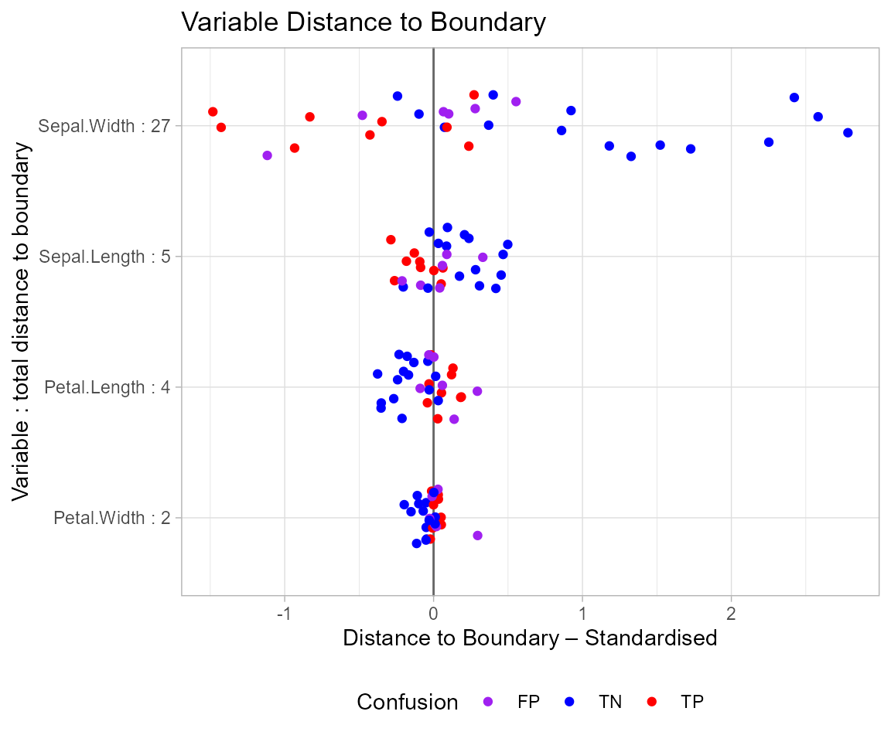
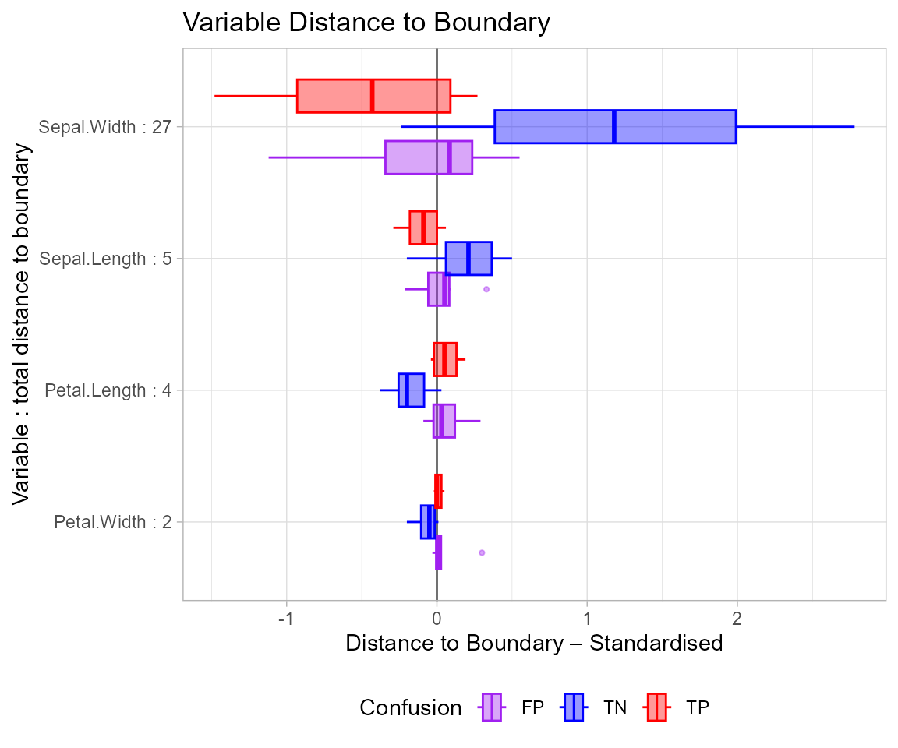
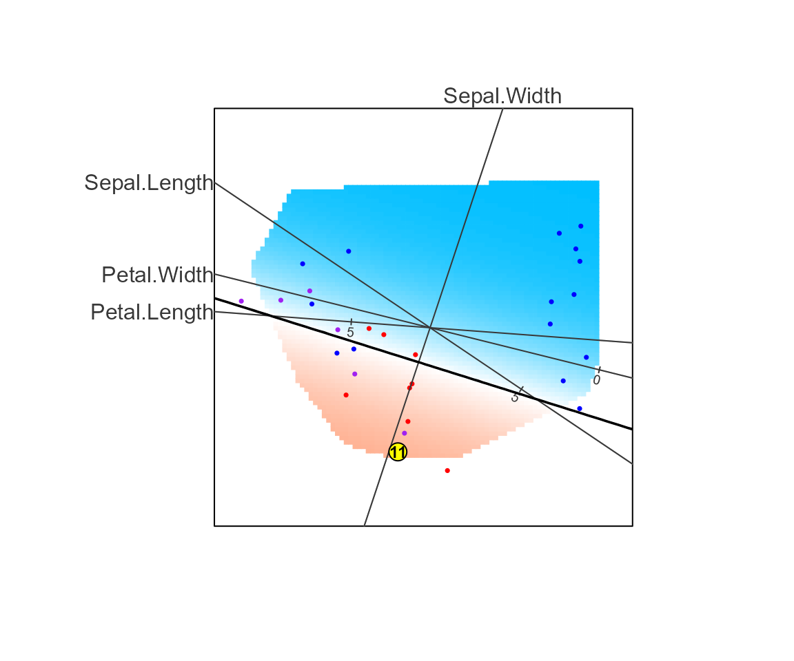
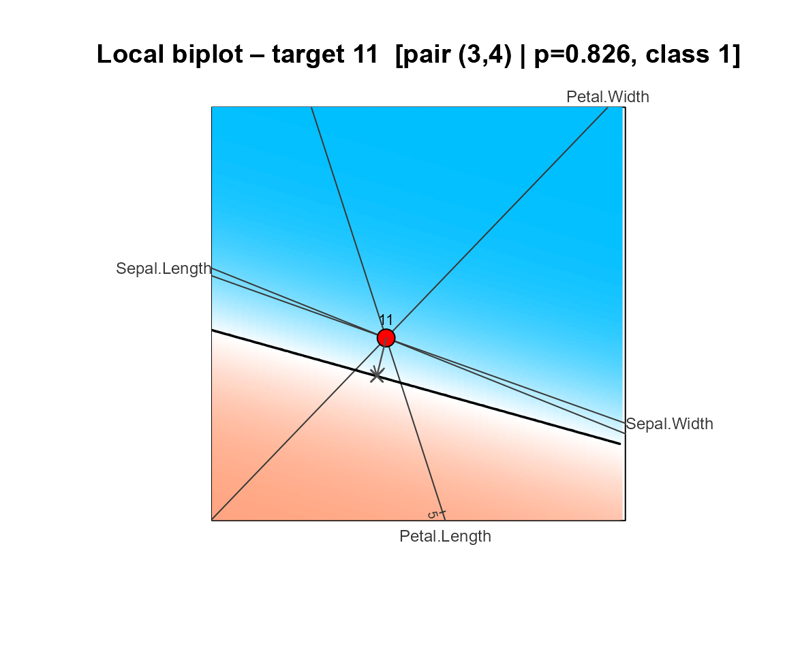
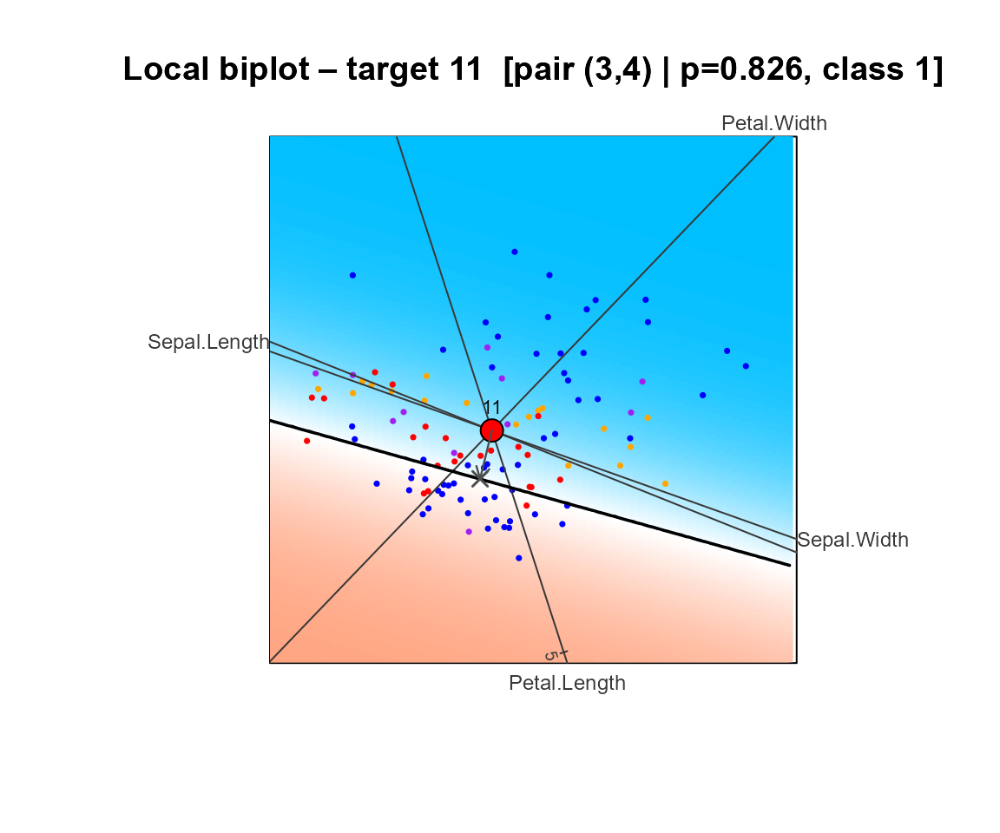
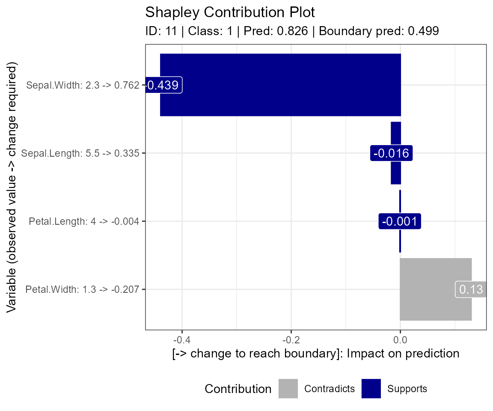

Getting Started with Boundary Logic: Phases 1–3
Boundary_Logic-workflow.RmdOverview
boundarylogic provides a biplot-based post hoc explanation framework for binary classification models. The workflow has three phases:
- Phase 1: Prepare data, fit a model, project to a 2D biplot space, build a prediction grid that approximates the decision boundary, and visualise the result.
- Phase 2: Global interpretations — find counterfactuals for a set of observations, quantify variable importance, and fit a surrogate model to explain biplot regions.
- Phase 3: Local interpretation of a single observation — find the nearest counterfactual via biplot rotation, decompose the move using Shapley values, and produce a sparse counterfactual that changes as few variables as possible.
All Phase 1 artifacts are stored in a single bl_result
object that acts as the reproducible anchor for Phases 2 and 3.
Project structure and file layout
boundary_logic/ ← R project root (open .Rproj in RStudio)
│
├── R/ ← Package source (do not edit directly)
│ ├── utils.R ← Input validators and calc_gini()
│ ├── predict_utils.R ← Internal .pred_function() dispatcher
│ ├── feasibility_utils.R ← Variable range helpers
│ ├── hull_utils.R ← Convex hull polygon helpers
│ ├── model_utils.R ← Internal .fit_model()
│ ├── data_prepare.R ← bl_prepare_data(), bl_wrap_data()
│ ├── model_fit.R ← bl_fit_model(), bl_wrap_model()
│ ├── outlier_filter.R ← bl_filter_outliers()
│ ├── projection.R ← bl_build_projection()
│ ├── biplot_grid.R ← bl_build_grid()
│ ├── plot_biplot.R ← plot_biplotEZ()
│ ├── result.R ← bl_build_result(), bl_assemble(), print, summary
│ ├── boundary.R ← bl_find_boundary(), bl_robustness()
│ ├── surrogate.R ← bl_surrogate()
│ ├── project_points.R ← bl_project_points(), bl_predict()
│ ├── local_cf.R ← bl_select_target(), set_filters(), bl_find_local_cf()
│ └── shapley.R ← bl_shapley(), bl_find_sparse_cf()
│
├── tests/
│ ├── testthat.R ← Test runner entry point
│ └── testthat/
│ ├── helper.R ← Shared test fixtures
│ ├── test-data_prepare.R
│ ├── test-model_fit.R
│ ├── test-projection.R
│ ├── test-biplot_grid.R
│ ├── test-result.R
│ ├── test-predict_utils.R
│ └── test-feasibility_utils.R
│
├── vignettes/
│ └── phase1-workflow.Rmd ← This vignette
│
├── DESCRIPTION
└── NAMESPACESetup: load the package in RStudio
Open boundary_logic.Rproj in RStudio. In the
Build pane (top right), click Install
to install the package, or run:
# In the RStudio Console:
devtools::load_all() # fast load for development (no install needed)devtools::load_all() re-sources all R/
files into the session and makes all exported functions available
immediately — including plot_biplotEZ(),
bl_wrap_data(), and bl_wrap_model().
Important: always run
devtools::load_all()(or click Install in the Build pane) after adding or modifying source files. If you encountercould not find function, it means the package has not been reloaded since the file was added. To regenerate the NAMESPACE from roxygen2 tags after structural changes, rundevtools::document()first, thendevtools::load_all().
Phase 1 workflow
Phase 1 has six steps. At each step there is a standard route and one or more alternative routes depending on your starting point.
DATA ENTRY
┌─────────────────────────────────────────────────────────┐
│ Option A bl_prepare_data() raw data frame → bl_data │
│ Option B bl_wrap_data() pre-split data → bl_data │
└─────────────────────────────────────────────────────────┘
↓
OUTLIER FILTER [optional]
┌──────────────────────────────────────────────────────────────────────┐
│ bl_filter_outliers() reports % of data retained / removed │
└──────────────────────────────────────────────────────────────────────┘
↓
MODEL
┌──────────────────────────────────────────────────────────────────────┐
│ Option A bl_fit_model() built-in types with optional overrides │
│ Option B bl_wrap_model() your own model / custom predict function │
└──────────────────────────────────────────────────────────────────────┘
↓
┌──────────────────────────────────────────────────────────────────────┐
│ QUICK ROUTE bl_build_result() Steps 4–6 combined │
│ DETAILED bl_build_projection() → bl_build_grid() → bl_assemble() │
└──────────────────────────────────────────────────────────────────────┘
↓
plot_biplotEZ()Step 1 — Prepare data
Option A: bl_prepare_data() — raw data frame
bl_prepare_data() converts a raw data frame into a
binary-class data frame and produces a reproducible train/test
split.
The iris dataset has three species. We treat
"versicolor" as the positive class (coded 1);
all other species become 0.
library(boundarylogic)
bl_dat <- bl_prepare_data(
data = iris,
class_col = "Species",
target_class = "versicolor",
train_fraction = 0.8,
seed = 121L
)
print(bl_dat)
#> <bl_data>
#> Features : 4 (Sepal.Length, Sepal.Width, Petal.Length, Petal.Width)
#> Target : 'versicolor' -> 1, all others -> 0
#> Train rows : 120 | Test rows : 30What to check:
-
Features— the four iris measurement columns are selected automatically. -
Target— confirms the 1/0 coding rule. -
Train rows / Test rows— should be close to 80/20 of 150 = 120/30.
# Class balance in the training set
table(bl_dat$train_data$class)
#>
#> 0 1
#> 79 41
# First few rows
head(bl_dat$train_data)
#> Sepal.Length Sepal.Width Petal.Length Petal.Width class
#> 1 6.4 3.2 4.5 1.5 1
#> 2 4.8 3.4 1.6 0.2 0
#> 3 5.9 3.2 4.8 1.8 1
#> 4 4.6 3.1 1.5 0.2 0
#> 5 5.1 3.5 1.4 0.2 0
#> 6 7.0 3.2 4.7 1.4 1Option B: bl_wrap_data() — pre-split data
If your data is already split into training and test sets and your
class column is already coded as numeric 0/1, use
bl_wrap_data() to bypass the splitting and conversion
steps:
# Example: data already prepared externally
train_df <- my_train_data # must have feature columns + a column named "class" (0/1)
test_df <- my_test_data # same structure
bl_dat <- bl_wrap_data(
train_data = train_df,
test_data = test_df,
target_class = "versicolor" # informational label only
)
print(bl_dat)bl_wrap_data() returns the same bl_data
object as bl_prepare_data(), so all downstream functions
work identically.
Step 2 — Filter outliers (optional)
bl_filter_outliers() projects the training data to a
lightweight 2-PC space, builds a convex hull enclosing
hull_fraction of the points, removes observations outside
the hull, and reports the number and percentage of rows retained and
removed.
Model fitting is done separately in Step 3. This step is optional — skip it if you want to use all training data.
bl_filt <- bl_filter_outliers(
bl_data = bl_dat,
hull_fraction = 0.91,
verbose = TRUE
)
#> Hull fraction: 0.91 | Retained: 110 (91.7%) | Removed: 10 (8.3%)
print(bl_filt)
#> <bl_filter_result>
#> Hull fraction : 0.91
#> Retained : 110 (91.7%)
#> Removed : 10 (8.3%)What to check:
-
Retained / Removed— rows and percentages trimmed by the filter. - Try
hull_fraction = 1.0to keep all points (no filtering). - Try
hull_fraction = 0.8for more aggressive trimming.
Call bl_filter_outliers() multiple times with different
hull_fraction values to find the best setting, then proceed
to Step 3 to fit the model on the retained data.
Step 3 — Fit the model
Option A: bl_fit_model() — built-in model types
bl_fit_model() fits the chosen classifier on the
(filtered) training data and records training accuracy and Gini
coefficient.
bl_mod <- bl_fit_model(
train_data = bl_filt$train_data,
var_names = bl_filt$var_names,
model_type = "GLM", # logistic regression
cutoff = 0.5
)
print(bl_mod)
#> <bl_model>
#> Model type : GLM
#> Cutoff : 0.5
#> Train Accuracy: 0.7364 | Train Gini: 0.6693
#>
#> --- Model summary ---
#>
#> Call:
#> stats::glm(formula = ..y ~ ., family = stats::binomial, data = data)
#>
#> Coefficients:
#> Estimate Std. Error z value Pr(>|z|)
#> (Intercept) 7.3305 3.3929 2.161 0.0307 *
#> Sepal.Length -0.2703 0.7447 -0.363 0.7166
#> Sepal.Width -2.8850 1.0077 -2.863 0.0042 **
#> Petal.Length 1.7353 0.8202 2.116 0.0344 *
#> Petal.Width -3.5300 1.4345 -2.461 0.0139 *
#> ---
#> Signif. codes: 0 '***' 0.001 '**' 0.01 '*' 0.05 '.' 0.1 ' ' 1
#>
#> (Dispersion parameter for binomial family taken to be 1)
#>
#> Null deviance: 144.21 on 109 degrees of freedom
#> Residual deviance: 107.32 on 105 degrees of freedom
#> AIC: 117.32
#>
#> Number of Fisher Scoring iterations: 5
#>
#> ---------------------Note on
cutoff:cutoff = 0.5selects the decision boundary (the probability threshold at which a prediction switches from class 0 to class 1). The default is0.5and does not need to be specified unless you want to investigate a different threshold. Onlycutoff = 0.5gives valid boundary results in the current methodology. Other values are accepted but will not produce correct decision boundary estimates.
Supported model types:
model_type |
Algorithm | Backend |
|---|---|---|
"GLM" |
Logistic regression | parsnip → glm
|
"GAM" |
Generalised additive model | parsnip → mgcv
|
"GBM" |
Gradient boosting |
gbm (direct) |
"LDA" |
Linear discriminant analysis | parsnip → MASS
|
"SVM" |
Support vector machine | parsnip → kernlab
|
"NNET" |
Neural network | parsnip → nnet
|
"RForrest" |
Decision tree | parsnip → rpart
|
"XGB" |
XGBoost | parsnip → xgboost
|
tidymodels backends: All model types except
"GBM"are fitted using the tidymodels ecosystem (parsnip+workflows). The fitted$modelfield is aworkflows::workflowobject, and predictions use parsnip’s unifiedpredict(<workflow>, type = "prob")interface."GBM"usesgbm::gbm()directly because gbm is not a registered parsnip engine.
Hyperparameter overrides via
model_params:
Parameter names follow parsnip conventions for all
types except "GBM".
# GBM — uses gbm package parameter names directly
bl_fit_model(train_data, var_names, model_type = "GBM",
model_params = list(n.trees = 1000, shrinkage = 0.05))
# NNET — parsnip parameter names
bl_fit_model(train_data, var_names, model_type = "NNET",
model_params = list(hidden_units = 10, penalty = 0.01, epochs = 500))
# XGB — parsnip parameter names
bl_fit_model(train_data, var_names, model_type = "XGB",
model_params = list(trees = 300, tree_depth = 5, learn_rate = 0.05))Option B: bl_wrap_model() — your own model
Use bl_wrap_model() when you have fitted your own model
externally — for example, using complex hyperparameter tuning, a
caret/tidymodels workflow, or a model type not natively supported.
Wrapping a model of a standard type (e.g., GLM with custom settings):
# Fit the model yourself with any settings you need
my_glm <- glm(class ~ ., data = bl_filt$train_data,
family = binomial(link = "logit"))
# Register it as a bl_model
bl_mod <- bl_wrap_model(
model = my_glm,
model_type = "GLM", # tells the package how to call predict()
var_names = bl_filt$var_names,
train_data = bl_filt$train_data # optional: compute accuracy/Gini
)
print(bl_mod)Wrapping a fully custom model type:
If your model uses a non-standard predict() interface,
supply a predict_fn with signature
function(model, new_data) returning a numeric probability
vector:
# Example: a model fitted using a different package
my_fn <- function(m, new_data) {
predict(m, new_data, type = "prob")[, "1"] # extract class-1 column
}
bl_mod <- bl_wrap_model(
model = my_custom_model,
model_type = "custom",
var_names = bl_filt$var_names,
predict_fn = my_fn,
train_data = bl_filt$train_data
)The returned bl_model object is fully compatible with
bl_build_result() and bl_assemble().
Steps 4–6 — Build and assemble
Quick route: bl_build_result()
bl_build_result() combines the projection, grid, and
assembly steps into a single call. Pass the output of
bl_filter_outliers() (or bl_prepare_data() if
no filtering was applied) and the fitted model; the function handles
everything else.
Note:
bl_build_result()always builds the projection matrix V from the training data of the supplied object. If you need to build V from a non-standard data source, use the individual functions described in the Detailed route section below.
bl_results <- bl_build_result(
bl_data = bl_filt, # pass bl_dat here if Step 2 was skipped
bl_model = bl_mod,
method = "PCA", # or "CVA" — see note below
m = 100L, # grid resolution; use 200L for final analysis
rounding = 3L # contour band width: cutoff ± 0.001
)
print(bl_results)
#> <bl_result>
#> Model type : GLM
#> Method : PCA
#> Features : 4 (Sepal.Length, Sepal.Width, Petal.Length, Petal.Width)
#> Train rows : 110 | Test rows: 30
#> Cutoff : 0.5
#> Accuracy : 0.7364 | Gini: 0.6693
#> Grid size : 100 x 100
#> Hull fraction: 1.00
#> Created : 2026-03-25 06:21:05Use summary() for a more detailed view including the
confusion matrix and contour statistics:
summary(bl_results)
#> <bl_result>
#> Model type : GLM
#> Method : PCA
#> Features : 4 (Sepal.Length, Sepal.Width, Petal.Length, Petal.Width)
#> Train rows : 110 | Test rows: 30
#> Cutoff : 0.5
#> Accuracy : 0.7364 | Gini: 0.6693
#> Grid size : 100 x 100
#> Hull fraction: 1.00
#> Created : 2026-03-25 06:21:05
#>
#> --- Model performance (training data) ---
#> Confusion matrix (train):
#> Actual
#> Predicted 0 1
#> 0 59 18
#> 1 11 22
#>
#> Grid probability range: [0.0060, 0.9030]
#> Contour lines found : 2
#> Polygon filter : applied (fraction = 1.00)PCA vs CVA:
- PCA — separates observations by overall variance. Use this as the default starting point.
-
CVA — maximises between-class separation relative
to within-class spread. Supply
bl_modelto use four-class confusion labels (TP/TN/FP/FN) automatically:
# CVA — confusion labels derived from bl_mod automatically
bl_results <- bl_build_result(
bl_data = bl_filt,
bl_model = bl_mod,
method = "CVA"
)Contour band width: rounding
The rounding parameter controls only the width of the
band used to extract decision boundary contour lines from the prediction
grid:
rounding |
b_margin |
Contour levels |
|---|---|---|
2L |
0.01 |
0.49 / 0.51
|
3L |
0.001 |
0.499 / 0.501
|
A wider band (rounding = 2L) produces smoother, more
continuous contours and is more robust when the model’s decision surface
is gradual. A narrower band (rounding = 3L) traces the
boundary more precisely. All model predictions are always rounded to 3
decimal places regardless of this setting.
Exploratory biplot (no model yet):
Omit bl_model to get a quick biplot of the data before
fitting. bl_build_result() returns a
bl_projection object that can be plotted directly:
bl_proj_explore <- bl_build_result(bl_filt, method = "PCA")
plot(bl_proj_explore) # coloured by true class (red = class 1, blue = class 0)Detailed route: individual functions
For full control over each step, call the three functions separately. This is useful when you want to inspect intermediate outputs or tune grid settings precisely.
Step 4 — bl_build_projection() computes
the loading matrix V (and its inverse tV) that maps observations from
the p-dimensional feature space to the 2D biplot Z-space.
bl_proj <- bl_build_projection(
train_data = bl_filt$train_data,
var_names = bl_filt$var_names,
method = "PCA",
standardise = TRUE,
proj_dims = c(1L, 2L)
)
print(bl_proj)Step 5 — bl_build_grid() creates an m ×
m regular grid in Z-space, back-projects each point to X-space, scores
every grid point through the model, and extracts decision boundary
contour lines.
bl_grid <- bl_build_grid(
train_data = bl_filt$train_data,
bl_projection = bl_proj,
bl_model = bl_mod,
m = 100L # use 200L for final analysis
)
print(bl_grid)Grid resolution guidance:
m |
Points | Notes |
|---|---|---|
| 50 | 2,500 | Fast; use for quick checks |
| 100 | 10,000 | Good for interactive exploration |
| 200 | 40,000 | Recommended for final analysis |
What to check:
-
Prob range— should span values on both sides of 0.5 for a meaningful boundary. -
Contour lines— should be ≥ 1; if 0, the model may predict a single class across the entire biplot plane.
Step 6 — bl_assemble() collects all
Phase 1 outputs into a single bl_result object.
bl_results <- bl_assemble(
bl_data = bl_filt, # pass bl_dat if Step 2 was skipped
bl_model = bl_mod,
bl_projection = bl_proj,
bl_grid = bl_grid
)
print(bl_results)Visualise: plot_biplotEZ()
plot_biplotEZ() takes the assembled
bl_result and draws a full biplot visualisation
showing:
- Coloured prediction grid — blue for class 0, red for class 1 probability regions.
- Training data points — coloured by confusion category (TP = red, TN = blue, FP = purple, FN = orange).
- Variable axes — biplot arrows showing the direction of each feature in the 2D plane.
- Decision boundary contour lines.
plot_biplotEZ(bl_results)#>
#> --- Prediction summary ---
#> Points plotted : 110
#> Predicted 1 : 33 (30.0 %)
#> Predicted 0 : 77 (70.0 %)
#> Accuracy : 81 / 110 (73.6 %)
#> TP / TN / FP / FN : 22 / 59 / 11 / 18
#> --------------------------Plotting test data
bl_project_points() projects any data frame into the
Z-space of bl_results. Pass the result to
plot_biplotEZ() via the points argument to
overlay the test set on the biplot:
test_pts <- bl_project_points(bl_results$test_data, bl_results)
plot_biplotEZ(bl_results, points = test_pts)#>
#> --- Prediction summary ---
#> Points plotted : 30
#> Predicted 1 : 15 (50.0 %)
#> Predicted 0 : 15 (50.0 %)
#> Accuracy : 24 / 30 (80.0 %)
#> TP / TN / FP / FN : 9 / 15 / 6 / 0
#> --------------------------Highlighting a target observation
To highlight a specific data point — for example, a test observation
you want to explain — pass it as a named numeric vector in original
X-space. The point is projected to Z-space automatically and plotted in
yellow. Supply target_label to display a number or
identifier inside the marker:
target <- unlist(bl_results$test_data[1, bl_results$var_names])
plot_biplotEZ(
bl_results,
target_point = target,
target_label = 1
)Adjustable display options
All visual elements can be tuned:
plot_biplotEZ(
bl_results,
no_grid = FALSE, # set TRUE to hide the coloured grid
no_points = FALSE, # set TRUE to hide training points
no_contour = FALSE, # set TRUE to hide the boundary line
new_title = "My GLM Boundary",
cex_z = 0.8, # training point size
label_dir = "Hor", # "Hor" or "Rad"
label_cex = 1.0, # variable name (axis label) size
tick_label_cex = 0.5, # axis tick label size
ticks_v = 2L,
label_offset_var = c(1L, 3L),
label_offset_dist = c(0.8, 1.2),
contour_col = "darkgreen",
contour_lwd = 2.0,
contour_lty = 2L
)Phase 2: Global interpretation
Phase 2 uses the bl_result object from Phase 1 to
perform interpretability analyses across a set of observations. All
Phase 2 functions take bl_results as their first
argument.
Global counterfactual search: bl_find_boundary()
bl_find_boundary() finds the nearest decision boundary
point for each observation in a dataset. For each row it searches the
pre-computed boundary contour in Z-space, inverse-projects the closest
boundary point back to X-space, and returns the change required in each
variable to cross the boundary.
The search always constrains counterfactuals to the training data
range (train_ranges) — observations outside the training
feature envelope are not considered feasible counterfactuals.
# Find boundary for all test observations
bl_bnd <- bl_find_boundary(bl_results, data = bl_results$test_data)
print(bl_bnd)
#> <bl_boundary>
#> Observations : 30
#> Boundaries used: 2
#> Dist Z (mean) : 0.9647
#> Dist X (mean) : 1.1395
#> B_pred range : [0.4990, 0.5010]
# Overlay counterfactuals on the biplot
plot_biplotEZ(bl_results, points = test_pts, boundary = bl_bnd)#>
#> --- Prediction summary ---
#> Points plotted : 30
#> Predicted 1 : 15 (50.0 %)
#> Predicted 0 : 15 (50.0 %)
#> Accuracy : 24 / 30 (80.0 %)
#> TP / TN / FP / FN : 9 / 15 / 6 / 0
#> --------------------------The data argument accepts any labelled data frame with
the same feature columns as the training data. To search training
observations instead:
bl_bnd_train <- bl_find_boundary(bl_results, data = bl_results$train_data)plot.bl_boundary() shows per-variable distances between
each observation and its counterfactual:
plot(bl_bnd) # jitter plot (default)
#>
#> Robustness (total distance): 38.72
#>
#> Per-variable totals (descending):
#> Sepal.Width Sepal.Length Petal.Length Petal.Width
#> 27.43 5.49 4.21 1.60
plot(bl_bnd, type = "box") # boxplot
#>
#> Robustness (total distance): 38.72
#>
#> Per-variable totals (descending):
#> Sepal.Width Sepal.Length Petal.Length Petal.Width
#> 27.43 5.49 4.21 1.60Variable importance: bl_robustness()
bl_robustness() quantifies how much each variable
contributes to the distance between an observation and its
counterfactual. Variables with larger contributions are more important
for crossing the boundary.
Note:
plot(bl_bnd)already prints the overall robustness scalar and per-variable totals to the console. Callbl_robustness()separately only when you need to access the values programmatically — for example, to compare robustness across models.
bl_rob <- bl_robustness(bl_bnd)
print(bl_rob)
#> $sum_of_distance
#> Sepal.Length Sepal.Width Petal.Length Petal.Width
#> 5.486750 27.433144 4.205957 1.596877
#>
#> $robustness
#> [1] 38.72273Surrogate model: bl_surrogate()
bl_surrogate() assigns each training observation to a
biplot region (based on its position relative to the decision boundary
contours) and fits a simple rule-based surrogate model that predicts
class from region membership. This gives an interpretable, region-level
explanation of how the classifier partitions the feature space.
Observations that fall outside the training convex hull receive
surrogate_pred = NA and are excluded from the surrogate
accuracy calculation.
bl_sur <- bl_surrogate(bl_results)
print(bl_sur)
#> <bl_surrogate>
#> Observations : 110
#> Surrogate regions : 2
#> Accuracy vs model : 0.8636
#> Accuracy vs labels : 0.7091
# Visualise the surrogate regions
plot(bl_sur)#> Surrogate accuracy vs model : 0.8636
#> Surrogate accuracy vs labels: 0.7091Phase 3: Local interpretation
Phase 3 explains a single target observation by finding the nearest decision boundary through rotation of the biplot plane, decomposing the required variable changes using Shapley values, and producing a sparse counterfactual.
Inspect predictions and select a target
bl_predict() scores every row and returns a tidy data
frame with row, pred_prob,
pred_class, true_class,
confusion, and all feature columns. Print it, browse the
rows, and assign the row you want to explain to tdp.
Predictions are rounded to 3 decimal places.
bl_select_target() then wraps that observation into a
bl_target object, projects it to Z-space, and scores it
through the model. The default data source is
bl_results$test_data; pass a row index or a single-row data
frame as target.
pred_summary <- bl_predict(bl_results)
print(pred_summary)
#> row pred_prob pred_class true_class confusion Sepal.Length Sepal.Width
#> 1 1 0.377 0 0 TN 4.4 2.9
#> 2 2 0.010 0 0 TN 5.4 3.9
#> 3 3 0.036 0 0 TN 5.7 3.8
#> 4 4 0.084 0 0 TN 5.1 3.3
#> 5 5 0.093 0 0 TN 5.2 3.5
#> 6 6 0.060 0 0 TN 5.4 3.4
#> 7 7 0.042 0 0 TN 5.1 3.8
#> 8 8 0.222 0 0 TN 4.8 3.0
#> 9 9 0.194 0 0 TN 4.6 3.2
#> 10 10 0.053 0 0 TN 5.3 3.7
#> 11 11 0.826 1 1 TP 5.5 2.3
#> 12 12 0.639 1 1 TP 6.6 2.9
#> 13 13 0.835 1 1 TP 6.3 2.5
#> 14 14 0.526 1 1 TP 6.4 2.9
#> 15 15 0.623 1 1 TP 5.8 2.7
#> 16 16 0.727 1 1 TP 5.5 2.5
#> 17 17 0.823 1 1 TP 5.0 2.3
#> 18 18 0.674 1 1 TP 5.6 2.7
#> 19 19 0.530 1 1 TP 5.7 2.9
#> 20 20 0.529 1 0 FP 5.8 2.7
#> 21 21 0.651 1 0 FP 6.3 2.9
#> 22 22 0.313 0 0 TN 6.5 3.0
#> 23 23 0.645 1 0 FP 4.9 2.5
#> 24 24 0.827 1 0 FP 7.3 2.9
#> 25 25 0.125 0 0 TN 5.8 2.8
#> 26 26 0.850 1 0 FP 7.7 2.8
#> 27 27 0.389 0 0 TN 6.2 2.8
#> 28 28 0.758 1 0 FP 7.2 3.0
#> 29 29 0.165 0 0 TN 6.8 3.2
#> 30 30 0.052 0 0 TN 6.2 3.4
#> Petal.Length Petal.Width
#> 1 1.4 0.2
#> 2 1.3 0.4
#> 3 1.7 0.3
#> 4 1.7 0.5
#> 5 1.5 0.2
#> 6 1.5 0.4
#> 7 1.9 0.4
#> 8 1.4 0.3
#> 9 1.4 0.2
#> 10 1.5 0.2
#> 11 4.0 1.3
#> 12 4.6 1.3
#> 13 4.9 1.5
#> 14 4.3 1.3
#> 15 3.9 1.2
#> 16 4.0 1.3
#> 17 3.3 1.0
#> 18 4.2 1.3
#> 19 4.2 1.3
#> 20 5.1 1.9
#> 21 5.6 1.8
#> 22 5.8 2.2
#> 23 4.5 1.7
#> 24 6.3 1.8
#> 25 5.1 2.4
#> 26 6.7 2.0
#> 27 4.8 1.8
#> 28 5.8 1.6
#> 29 5.9 2.3
#> 30 5.4 2.3
# Inspect pred_summary to choose a row. For a clear counterfactual,
# pick a class-1 observation with a predicted probability well above 0.5.
# Here we select the first predicted class-1 row automatically.
tdp <- which(pred_summary$pred_class == 1)[1]
tgt <- bl_select_target(bl_results, target = tdp)
print(tgt)
#> -- bl_target --
#> Row ID : 11
#> Predicted prob : 0.8260
#> Predicted class: 1
#> Feature values :
#> Sepal.Length Sepal.Width Petal.Length Petal.Width
#> 5.5 2.3 4.0 1.3
# Highlight the target on the main biplot
plot_biplotEZ(
bl_results,
points = test_pts,
target_point = unlist(tgt$x_obs),
target_label = tdp
)
#>
#> --- Prediction summary ---
#> Points plotted : 30
#> Predicted 1 : 15 (50.0 %)
#> Predicted 0 : 15 (50.0 %)
#> Accuracy : 24 / 30 (80.0 %)
#> TP / TN / FP / FN : 9 / 15 / 6 / 0
#> --------------------------External observation (not in train/test): pass a
single-row data frame directly as target. No class column
is needed.
new_obs <- data.frame(
Sepal.Length = 5.8, Sepal.Width = 2.7,
Petal.Length = 4.1, Petal.Width = 1.0
)
tgt_ext <- bl_select_target(bl_results, target = new_obs)
print(tgt_ext)
#> -- bl_target --
#> Row ID : external
#> Predicted prob : 0.8260
#> Predicted class: 1
#> Feature values :
#> Sepal.Length Sepal.Width Petal.Length Petal.Width
#> 5.8 2.7 4.1 1.0Set actionability filters (optional):
set_filters()
set_filters() constrains the counterfactual search to
clinically or practically plausible variable directions. This step is
optional — omit it if no constraints are needed.
Valid constraint types:
-
"decrease"— counterfactual value must be ≤ observed. -
"increase"— counterfactual value must be ≥ observed. -
"fixed"— search allows ±0.5 of the observed value; always reverts to the original observed value in the sparse counterfactual. -
c(min, max)— counterfactual must lie within this absolute range.
# Filters are illustrated here but not applied in the local search below,
# because the constraints that are clinically meaningful depend on the
# specific dataset and target. In interactive use, pass flt to
# bl_find_local_cf() via the set_filters argument.
flt <- set_filters(
tgt,
Petal.Length = "decrease", # only consider reductions
Sepal.Length = "fixed" # treat as non-actionable
)
print(flt)
#> -- bl_filters --
#> Petal.Length : decrease
#> Sepal.Length : fixedFind local counterfactual: bl_find_local_cf()
bl_find_local_cf() searches for the nearest decision
boundary point relative to the target observation by testing up to
max_pairs eigenvector pairs. For each pair it:
- Rotates the biplot so the target lies on the projection plane.
- Builds a local prediction grid in the rotated Z-space.
- Applies
train_ranges(feasibility) andset_filters(actionability, if supplied). - Finds the nearest opposing-class boundary point.
The pair with the overall minimum Z-space distance is selected.
Note: the Z-space convex hull polygon is not applied during the local search — rotation invalidates the original polygon coordinates. Only
train_rangesandset_filtersconstrain the search.
# Unconstrained search — finds the nearest boundary point across all
# eigenvector pairs. Pass set_filters = flt to add actionability
# constraints in interactive use.
bl_local <- bl_find_local_cf(
bl_result = bl_results,
bl_target = tgt
)
#> Pair 1/6: eigenvectors (1, 2) ...
#> Distance: 1.3450
#> Pair 2/6: eigenvectors (1, 3) ...
#> Distance: 0.9525
#> Pair 3/6: eigenvectors (2, 3) ...
#> Distance: 0.7035
#> Pair 4/6: eigenvectors (1, 4) ...
#> Distance: 0.3751
#> Pair 5/6: eigenvectors (2, 4) ...
#> Distance: 0.2086
#> Pair 6/6: eigenvectors (3, 4) ...
#> Distance: 0.2066
#> Best pair: (3, 4) | Distance: 0.2066
print(bl_local)
#> -- bl_local_result --
#> Solution found : TRUE
#> Best pair : (3, 4)
#> Distance (Z) : 0.2066
#> Boundary pred : 0.4990
#>
#> Target:
#> -- bl_target --
#> Row ID : 11
#> Predicted prob : 0.8260
#> Predicted class: 1
#> Feature values :
#> Sepal.Length Sepal.Width Petal.Length Petal.Width
#> 5.5 2.3 4.0 1.3
#>
#> All Z-distances by pair:
#> pair distance
#> (1,2) 1.3449591
#> (1,3) 0.9524980
#> (2,3) 0.7034917
#> (1,4) 0.3751115
#> (2,4) 0.2085512
#> (3,4) 0.2066313
# Local biplot: target (filled circle) + counterfactual (grey cross)
# Default: training points hidden. Pass no_points = FALSE to show them.
plot(bl_local)
#>
#> --- Local CF summary ---
#> Target : 11
#> Pred prob : 0.8260 (class 1)
#> Best pair : (3, 4)
#> Distance (Z) : 0.2066
#> Boundary pred : 0.4990
#> ------------------------
plot(bl_local, no_points = FALSE) # also show training data
#>
#> --- Local CF summary ---
#> Target : 11
#> Pred prob : 0.8260 (class 1)
#> Best pair : (3, 4)
#> Distance (Z) : 0.2066
#> Boundary pred : 0.4990
#> ------------------------Shapley attribution: bl_shapley()
bl_shapley() decomposes the path from the target to the
counterfactual into per-variable contributions using the exact Shapley
formula (for p ≤ 14 variables).
Each variable is classified as:
- Supports (dark blue) — moving in this direction helps cross the boundary.
- Contradicts (grey) — moving in this direction works against crossing the boundary.
The Y-axis labels show
variable: observed_value → required_change, both rounded to
3 decimal places to match the Shapley contribution bar labels.
bl_shapley_values <- bl_shapley(bl_local)
print(bl_shapley_values)
#> -- bl_shapley --
#> Row ID : 11
#> Pred prob : 0.8260
#> Pred class : 1
#> Boundary pred : 0.4990
#>
#> Shapley table:
#> varnames pred_data data_to_boundary shapley_cause Contribute
#> Petal.Width 1.3 -0.2073 0.1298 Contradicts
#> Petal.Length 4.0 -0.0036 -0.0011 Supports
#> Sepal.Length 5.5 0.3351 -0.0164 Supports
#> Sepal.Width 2.3 0.7619 -0.4393 Supports
plot(bl_shapley_values)
Sparse counterfactual: bl_find_sparse_cf()
bl_find_sparse_cf() creates a parsimonious
counterfactual by:
- Reverting all Contradicts variables to their observed values.
- Reverting all variables marked
"fixed"inset_filters()to their observed values. - Optionally rounding Supports variable changes to a
specified resolution (
round_to). - Re-scoring the result through the model.
solution_valid = TRUE means the sparse counterfactual
still crosses the decision boundary. If FALSE, try relaxing
actionability filters or increasing round_to.
bl_sparse <- bl_find_sparse_cf(bl_shapley_values, round_to = NULL)
# print() shows three prediction values to verify the class flip:
# Observed — model score for the original data point
# Full CF — model score at the full counterfactual
# Sparse CF — model score for the sparse (zeroed) counterfactual
print(bl_sparse)
#> -- bl_sparse_result --
#> Solution valid : TRUE
#>
#> Predictions:
#> Observed : 0.8260 (class 1)
#> Full CF : 0.4990
#> Sparse CF : 0.3240
#>
#> Variable summary:
#> variable x_obs B_x x_sparse used_in_sparse
#> Petal.Width 1.3 1.0927 1.3000 FALSE
#> Petal.Length 4.0 3.9964 3.9964 TRUE
#> Sepal.Length 5.5 5.8351 5.8351 TRUE
#> Sepal.Width 2.3 3.0619 3.0619 TRUE
# Local biplot with both CFs overlaid:
# Grey cross = full counterfactual (all variables changed)
# Green cross = sparse CF (valid — crosses boundary)
# Yellow cross = sparse CF (invalid — does not cross boundary)
# To also show training data: plot(bl_sparse, no_points = FALSE)
plot(bl_sparse)#>
#> --- Sparse CF summary ---
#> Target : 11
#> Observed pred : 0.8260 (class 1)
#> Full CF pred : 0.4990
#> Sparse CF pred : 0.3240
#> Solution valid : TRUE
#> -------------------------round_to is resolution-based (rounds to the nearest
multiple). round_to = NULL keeps exact CF values:
bl_find_sparse_cf(bl_shapley_values, round_to = 0.5) # nearest 0.5
bl_find_sparse_cf(bl_shapley_values, round_to = 1) # nearest integerAlternative workflow: bring your own data and model
The following example shows the complete alternative workflow for a user who already has pre-split, pre-coded data and wants to fit their own model with full control over hyperparameters.
library(boundarylogic)
# Step 1: wrap pre-split data (class column already 0/1)
bl_dat <- bl_wrap_data(
train_data = my_train_df, # columns: features + "class"
test_data = my_test_df,
target_class = "versicolor"
)
# Step 2: filter outliers
bl_filt <- bl_filter_outliers(
bl_data = bl_dat,
hull_fraction = 0.9,
verbose = TRUE
)
# Step 3: fit your own model on the filtered training data
my_svm <- e1071::svm(
class ~ .,
data = bl_filt$train_data,
probability = TRUE,
type = "C-classification",
kernel = "radial",
cost = 10,
gamma = 0.5
)
# Wrap it as a bl_model
bl_mod <- bl_wrap_model(
model = my_svm,
model_type = "SVM",
var_names = bl_filt$var_names,
train_data = bl_filt$train_data
)
print(bl_mod)
# Steps 4–6: single call
bl_results <- bl_build_result(bl_filt, bl_mod, method = "PCA")
# Visualise
plot_biplotEZ(bl_results, new_title = "Custom SVM Boundary")Running without the outlier filter
If you prefer not to use bl_filter_outliers(), skip Step
2 and pass bl_dat directly to
bl_build_result():
bl_dat <- bl_prepare_data(iris, class_col = "Species",
target_class = "versicolor")
bl_mod <- bl_fit_model(bl_dat$train_data, bl_dat$var_names,
model_type = "GLM")
bl_results <- bl_build_result(bl_dat, bl_mod, method = "PCA")
plot_biplotEZ(bl_results)Running the unit tests
The package ships with unit tests across multiple test files. Run them all at once from the RStudio Build pane → Test button, or from the Console:
devtools::test()To run a single test file interactively:
testthat::test_file("tests/testthat/test-data_prepare.R")
testthat::test_file("tests/testthat/test-model_fit.R")
testthat::test_file("tests/testthat/test-projection.R")
testthat::test_file("tests/testthat/test-biplot_grid.R")
testthat::test_file("tests/testthat/test-result.R")
testthat::test_file("tests/testthat/test-predict_utils.R")
testthat::test_file("tests/testthat/test-feasibility_utils.R")Verifying the result manually
After assembling, you can inspect any component of
bl_results directly:
# Projection matrices
dim(bl_results$V) # should be 4 x 4 for iris
dim(bl_results$tV) # should be 4 x 4
# Decision boundary contour lines
length(bl_results$biplot_grid$ct) # number of contour segments
bl_results$biplot_grid$ct[[1]] # first contour: $level, $x, $y
# Model accuracy and Gini
bl_results$accuracy
bl_results$giniQuick sanity checks
# 1. V and tV are inverse of each other (should be close to identity)
round(bl_results$V %*% bl_results$tV, 10)
# 2. Grid probabilities span both classes
range(bl_results$biplot_grid$grid_prob)
# 3. At least one contour line found (boundary exists)
stopifnot(length(bl_results$biplot_grid$ct) > 0)
# 4. Training rows match expectation
nrow(bl_results$train_data)
nrow(bl_results$test_data)Saving and reloading the result
Save the bl_result object to disk so you can reload it
in a future session without rerunning Phase 1:
# Save
saveRDS(bl_results, file = "outputs/bl_result_glm_pca.rds")
# Reload in a new session
bl_results <- readRDS("outputs/bl_result_glm_pca.rds")
print(bl_results)Summary of functions by phase
Phase 1
| Step | Function | Route | Input | Output |
|---|---|---|---|---|
| 1 | bl_prepare_data() |
Standard | Raw data frame | bl_data |
| 1 | bl_wrap_data() |
Alternative | Pre-split 0/1 data frames | bl_data |
| 2 | bl_filter_outliers() |
Optional | bl_data |
bl_filter_result |
| 3 | bl_fit_model() |
Standard | Training data frame | bl_model |
| 3 | bl_wrap_model() |
Alternative | Any fitted model object | bl_model |
| 4–6 | bl_build_result() |
Quick |
bl_data/bl_filter_result +
bl_model
|
bl_result |
| 4 | bl_build_projection() |
Detailed | Training data frame | bl_projection |
| 5 | bl_build_grid() |
Detailed | Training data, bl_projection,
bl_model
|
bl_grid |
| 6 | bl_assemble() |
Detailed |
bl_data/bl_filter_result + all above |
bl_result |
| — | plot_biplotEZ() |
— | bl_result |
(plot) |